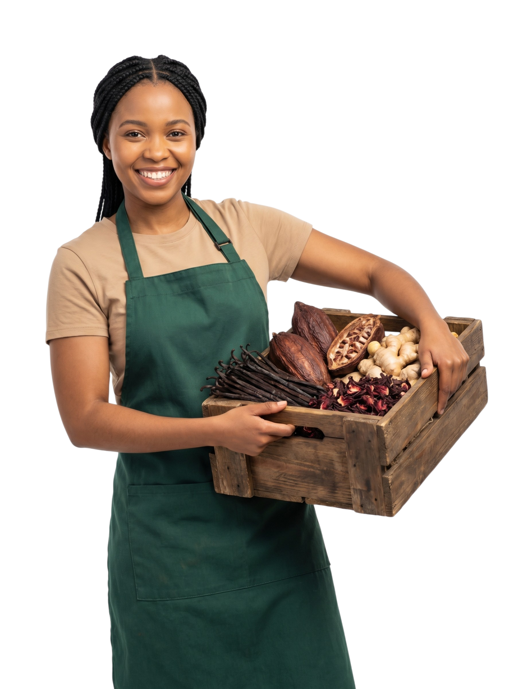
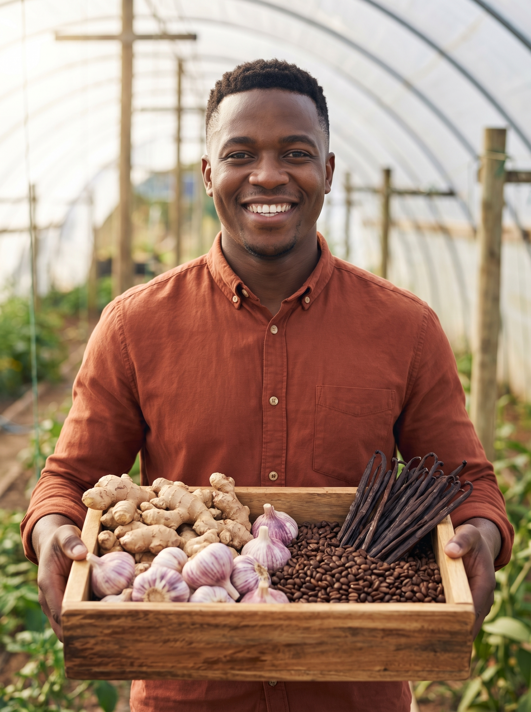

We are a UK-based agri-export company with established operations in Nigeria, Uganda, Ghana, and Tanzania, committed to sustainable agriculture and fair trade.

Tazverde is a UK-based agri-export company with established operations in Nigeria, Uganda, Ghana, and Tanzania. We specialize in the sourcing, processing, and global distribution of agricultural products.
From the fertile valleys of Uganda, our vanilla pods are carefully hand-picked and cured to preserve their bold, floral aroma — prized by gourmet chefs, wellness brands, and food manufacturers worldwide. Our ginger and garlic are grown using natural methods, processed with care, and handled to retain their full strength, flavor, and shelf life.
Each product is free from artificial additives or preservatives, ensuring a clean and authentic ingredient from farm to final use.
At Tazverde, we go beyond trade — we champion sustainable agriculture, foster long-term partnerships with smallholder farmers, and uphold environmental responsibility in all our sourcing and production processes. In alignment with UN SDG 2, we are committed to strengthening food systems and enhancing supply chain integrity across the agricultural export sector.
Our mission is deeply rooted in the belief that agriculture should nourish humanity while fiercely protecting the earth. We are committed to cultivating and delivering premium-quality agricultural products grown naturally, without compromising soil integrity or the health of the consumer. By adhering strictly to the highest global standards of food safety and quality control, we bridge the gap between local African harvests and international markets. However, our purpose extends far beyond the produce itself; we exist to empower the African farming community. Through fair compensation, continuous education, and the promotion of ethical trade practices, we ensure that the individuals working the land thrive alongside our business.
Our vision is to stand at the forefront of the global agricultural sector as the definitive, trusted brand for clean, ethically sourced food products. We see a future where the phrase "Grown in Africa" is universally recognized as a hallmark of unmatched quality, environmental stewardship, and chemical-free purity. By building a highly transparent and resilient supply chain, we aim to be a primary catalyst for sustainable economic growth across the African continent, transforming local agricultural communities into hubs of global excellence.
At TazVerde, we are driven by a deep commitment to sustainability, integrity, and excellence. We believe in respecting nature through eco-friendly farming and processing practices, while maintaining full transparency across our supply chain. Quality is at the core of everything we do, from cultivation to export, ensuring that every product meets the highest standards.
We value strong partnerships with both local communities and international clients, and we operate with a clear sense of responsibility, aligning our mission with global efforts to advance food security and environmental stewardship.
Every product we deliver — from rich vanilla powder to vibrant chili peppers — is grown in clean, fertile soils, air-dried or cold-processed, and subjected to strict quality checks.
Our ginger and garlic are selected for their pungency, medicinal value, and long shelf life, ideal for everything from wellness infusions to gourmet sauces. We preserve the original flavor, color, and nutrients of our products, offering true value to discerning chefs, food brands, and health-conscious consumers across the globe.

We work directly with trusted farming cooperatives across Africa, guaranteeing traceable sourcing and consistent product integrity.
Our eco-conscious farming ensures minimal environmental impact while delivering the purest, most authentic products possible.
Our export systems meet the needs of a fast-paced global market — reliable, timely, and scaled for any order size.